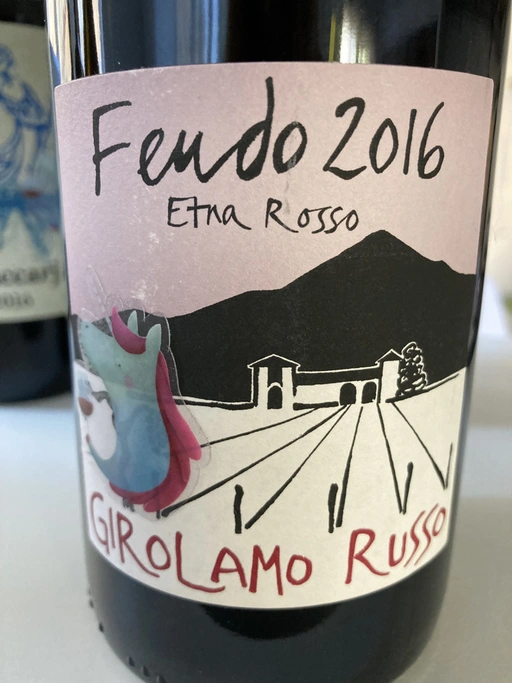
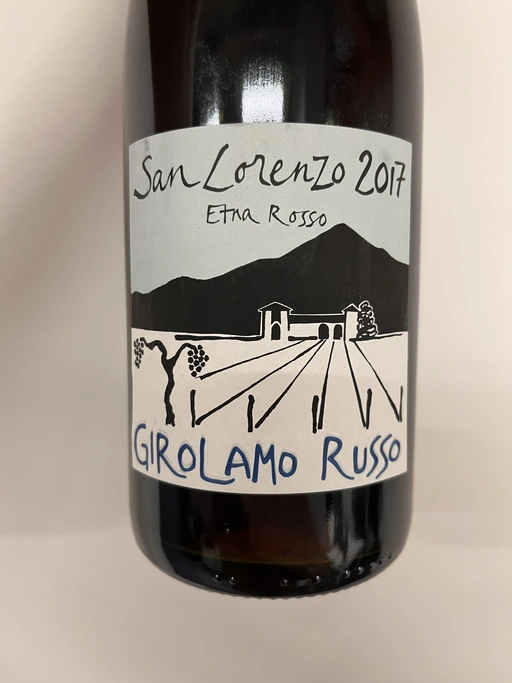
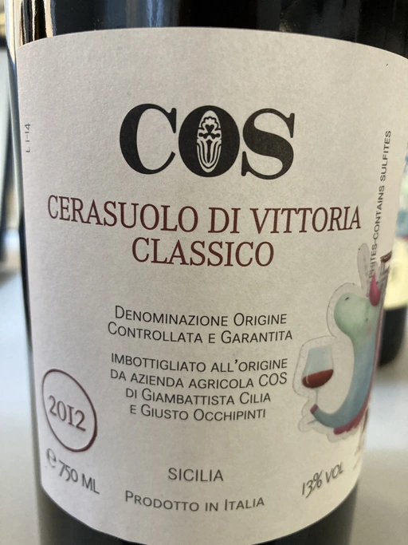

- Type
- Red Still, Dry
- Producer
- Girolamo Russo
- Vintage
- 2016
- Location
- Italy, Etna DOC
- Grapes
- Nerello Mascalese
- Alcohol
- 14.5
- Sugar
- 0.4
- Price
- 1510 UAH
- Cellar
- N/A
Producer
They say that Girolamo Russo was a pianist in the past. Well, maybe he stopped playing music professionally, but I can say that he started to create music in the form of wine.
Etna, Sicily, around 26 ha of vineyards, half is sold, half is turned into wine. 1 white, 1 rosé and 4 red wines.
Ratings
2021-11-02 - 9.00
Wonderful Nerello Mascalese! Beautiful and attractive bouquet of jamon, black dried fruits, dried herbs, balsamic notes, tobacco and underbrush. Still energetic, complex and yet friendly. Delicious beauty that would only improve in few coming years.
Tasted as part of Il Pirata event.
Related

Girolamo Russo
Etna Rosso San Lorenzo - 2017

Girolamo Russo
Etna Rosso A Rina - 2017

Girolamo Russo
Etna Rosato - 2019

Arianna Occhipinti
Il Frappato - 2018

Tenuta di Castellaro
Corinto - 2017

Alessandro Viola
Blanc De Blancs Metodo Classico Pas dose - NV

COS
Cerasuolo di Vittoria Classico - 2012